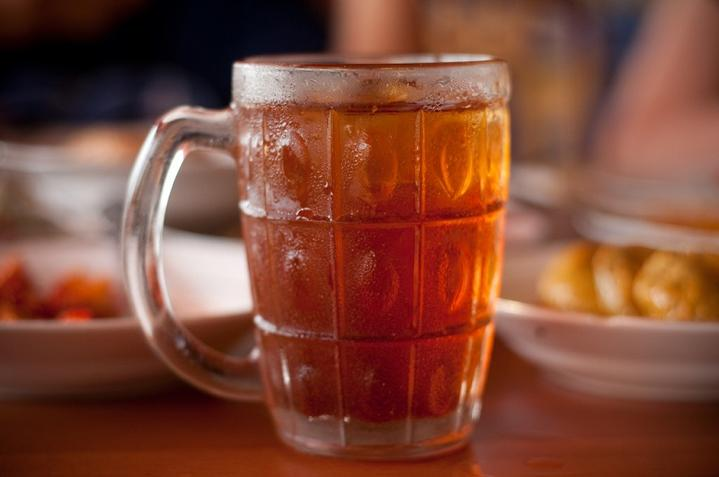
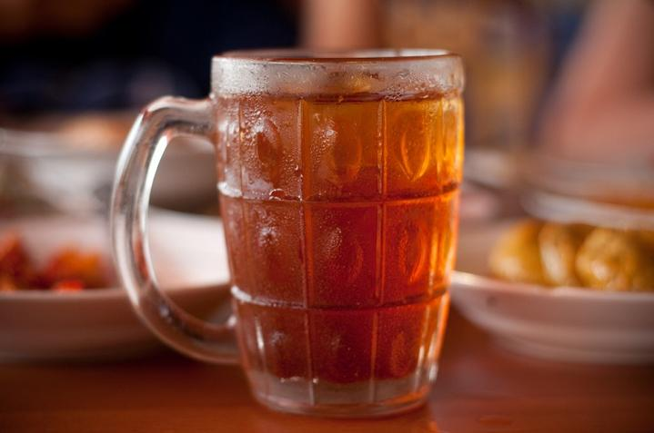

Selamat Datang di Website Resmi Angkringan Joss
 

Angkringan Joss merupakan salah satu angkringan di Kota Yogyakarta yang telah berdiri sejak tahun 1970. Angkringan Joss merupakan salah satu pelopor angkringan di Kota Yogyakarta. Lokasi Angkringan Joss terletak di jalan Malioboro No. 39 Yogyakarta. Angkringan Joss buka setiap hari mulai pukul 16:00 s/d 04:00 WIB. Tutup kalau lagi nggak buka, buka kalau lagi nggak punya uang.